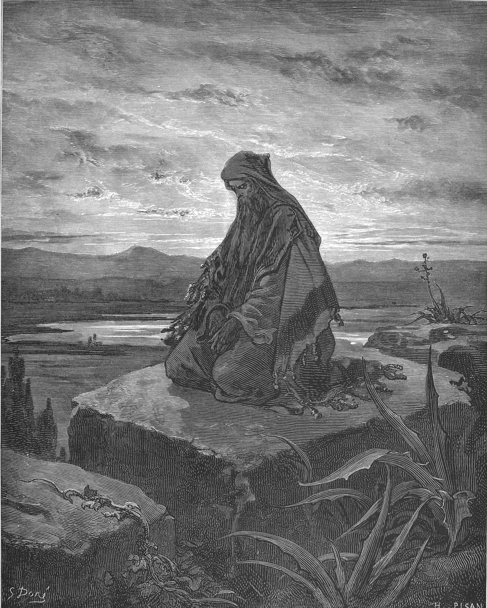

Isaiah 55 — The Mister Translation

Isaiah 55:1–13. Doré’s plate of the prophet is general and not drawn from this chapter. It has water, a landscape and wild plants in the foreground, and the chapter has all three: the waters of verse 1, the rain of verse 10, and the thornbush and nettle of verse 13.

Translator's Notes — verse by verse
⭐ “Ho”. Hoy is the word that opens the woes of the prophets, “Woe — a sinning nation” (Isaiah 1:4, now on these pages), and it is also the wail cried over the dead (dictionary). Here it is a summons, and the translation keeps one word for it, “Ho”, so that the reader hears the same call turned the other way. Rashi says it is the language of calling and gathering, and cites “Ho! Ho! Flee from the land of the north” (Zechariah 2:10 in the Hebrew, 2:6 in an English Bible, now on these pages). Radak says that after the war of Gog and Magog the nations will recognize that God rules over all, and will come to Jerusalem to learn his judgments and his teachings, as the book said at its start, “Come, let us go up to the mountain of Jehovah” (Isaiah 2:3), and that the water is a figure for the Torah and for wisdom. Ibn Ezra reads it as the words of Jehovah to the nations: in those days, whoever wants to learn the Torah, even one who has no money, which is to say no money to learn. The KJV and the ASV have “Ho, every one that thirsteth”, the NIV “Come, all you who are thirsty”, the TLB “Say there! Is anyone thirsty?”, the NWT 1984 “Hey there, all YOU thirsty ones!”, and the Douay “All you that thirst”. The Greek has no call at all: hoi dipsōntes poreuesthe eph’ hudōr, “you who thirst, go to the water”.
⚠ “Come, buy and eat… without money and without price”. The verb for “buy” is shivru, the verb of buying grain, the one the sons of Jacob use when they go down to Egypt “to buy grain” (Genesis 42:3, now on these pages), and it is the one Rashi names. Isaiah then sets the purchase against the price: bela chesef uvelo mechir, “without silver and without price”. The Hebrew says “wine and milk”, and the Greek has “wine and fat”, oinon kai stear. The KJV and the ASV have “without money and without price”, the NIV “without money and without cost”, the TLB “it’s all free!”, and the Douay “without money, and without any price”. Rashi says the waters are the Torah, and of the wine and milk that it is a good teaching, better than wine and milk. The same offer is made by the one who says “If anyone thirsts, let him come to me and drink” (John 7:37) and the “water of life for nothing” of Revelation 21:6 and 22:17, all now on these pages. Their Greek is not the Greek of the Psalter here, so they are an echo and not a quotation.
⭐ “Why do you weigh out silver for what is not bread”. The verb is shaqal, “weigh”, as silver was weighed before there were coins, and the translation keeps the scale in it. Rashi reads the line as a rebuke with a particular point: why do you cause yourselves to weigh out silver to your enemies, and have no bread? (the midrash Leviticus Rabbah 30:1, reported, not checked). Ibn Ezra says they toil over foreign wisdoms that will not help, and Radak, who quotes him, agrees and adds that these do not count as bread because they do not feed the body or the soul. The NWT 1984 has “Why do YOU people keep paying out money for what is not bread”, the NIV “Why spend money on what is not bread”, and the TLB “Why spend your money on food that doesn’t give you strength?” The KJV has “your labour for that which satisfieth not”, and the NIV “your labor on what does not satisfy”.
⭐ “Listen, listen to me”. Shim’u shamoa elai doubles the verb, “listen, listening to me”, and the NIV keeps the double, “Listen, listen to me”. The KJV and the ASV have “hearken diligently unto me”, the NWT 1984 “Listen intently to me”, and the Douay “Hearken diligently to me”. What follows is food: “eat what is good, and let your soul delight in fatness” (dictionary). Radak says what is good is the Torah, “for I have given you a good teaching, do not forsake my Torah” (Proverbs 4:2, now on these pages), and that the soul’s delight is for the world to come. Ibn Ezra says the delight is like the delight of the soul at the body’s death, and cites “it will be rich and fat” (Isaiah 30:23). The NIV has “delight in the richest of fare”, the KJV and the ASV “delight itself in fatness”, and the NWT 1984 “find its exquisite delight in fatness itself”.
⭐ “I will cut for you an everlasting covenant”. Ve-ekhretah lakhem berit olam: the idiom is “to cut a covenant” (dictionary), as at Genesis 15:18 (now on these pages), and the translation prints the cutting. It comes round at the end of the chapter: the covenant is cut here, and the sign at verse 13 “shall not be cut off”, lo yikkaret, the same root. The two ends of the chapter are one word. The KJV and the ASV have “I will make an everlasting covenant with you”, the NWT 1984 “I shall readily conclude with YOU people an indefinitely lasting covenant”, and the NIV “I will make an everlasting covenant with you”. The Greek has diathēsomai humin diathēkēn aiōnion, and the letter to the Hebrews has “the blood of an eternal covenant” (Hebrews 13:20, now on these pages).
⭐ “The steadfast loves of David, the faithful ones”. The words chasdei David stand in two verses of the Hebrew Bible: here, and Solomon’s prayer at the dedication of the temple, “remember the steadfast loves of David your servant” (2 Chronicles 6:42). Chesed is “steadfast love” (dictionary) and here it is in the plural, and the participle that follows, ha-ne’emanim, is from the root of “amen” (dictionary), the same root as the promise that David’s house “shall be made sure” (2 Samuel 7:16, now on these pages). Whose love is it, David’s or God’s to David? Rashi says it is God’s: “that I will repay David his acts of steadfast love”. Radak says it is the Messiah, for his name will be called David, “and David my servant shall be prince to them forever” (Ezekiel 37:25, now on these pages), and that the covenant with the people will stand as David’s steadfast loves stand. Ibn Ezra says it is the covenant and the love God cut with David, “for ever I will keep my steadfast love for him” (Psalm 89:29 in the Hebrew), and that the words may also hint at the Messiah of his house. The KJV and the ASV have “the sure mercies of David”, the NIV “my faithful love promised to David”, the NWT 1984 “the loving-kindnesses to David that are faithful”, and the Douay “the faithful mercies of David”. Paul quotes the Greek in the synagogue at Antioch, with a different verb: “I will give you the holy things of David, the faithful ones” (Acts 13:34, now on these pages), where the Greek Psalter has ta hosia Dauid ta pista after “I will make a covenant”.
⚠ “A witness… a leader and commander”. The “him” of verse 4 is not named. Ed is a witness (dictionary), nagid a leader (dictionary), and metsavveh a commander, and all three are for the peoples. Rashi says he is a prince and great over them, who reproves them and testifies to their ways to their faces. Ibn Ezra says it is the Messiah, and Radak says a witness is one who warns and testifies against you, and applies the verse to the Messiah. The KJV has “a leader and commander to the people”, the ASV “a leader and commander to the peoples”, the NIV “a ruler and commander of the peoples”, and the Douay “for a leader and a master to the Gentiles”. The TLB has “He proved my power by conquering foreign nations”, which does not follow the Hebrew.
⭐ “A nation you do not know you will call”. The nations run to Israel, “for the sake of Jehovah your God, and the Holy One of Israel” (the title of Isaiah 43:3, now on these pages), “for he has glorified you”. Radak says it is said to Israel: a nation far from the land of Israel, which you do not know, you will call, and it will come before you, because it hears of the wonders God did for you and fears you, and runs to serve. Rashi says “you will call” means for your service, if you listen to me. Ibn Ezra says the verb pe’erakh, “has glorified you”, is a strange form, with no parallel among the strong verbs and only among the weak ones, like “when he hears it he will answer you” (Isaiah 30:19). The ASV has “for he hath glorified thee”, the NIV “for he has endowed you with splendor”, the NWT 1984 “because he will have beautified you”, and the TLB “have glorified you”. The Greek turns the line round: ethnē ha ouk oidasi se, epikalesontai se, “nations that do not know you will call upon you”.
⭐ “While he can be found… while he is near”. The Hebrew is be-himmatsero, “in his being found”, and bihyoto qarov, “in his being near”, and the question every commentator asks is when that is. Rashi says it is before the decree, while he is still saying to you “seek me”. Ibn Ezra says it is before the decrees are sealed, because God is found at every place and every time, and that “near” hints at the presence in the temple, and adds that he takes this passage as a rebuke of the people of his own generation, who know they will be redeemed from Babylon and again from all the nations, and are told: now seek. Radak gives the rabbis’ reading, before the sentence is complete, and the Aramaic Targum of Jonathan, “seek the fear of Jehovah while you are alive”, and the correct one, he says, is what his father taught: seek him in the way that he is found by you, which is seeking with all the heart, as in “Jehovah is near to all who call on him, to all who call on him in truth” (Psalm 145:18, now on these pages). The Talmud sets the verse against the promise that God is near whenever we call (Deuteronomy 4:7) and answers that Isaiah is speaking of an individual, to whom God is near only at certain times, and the community, to whom he is near whenever it calls (Rosh Hashanah 18a, in Sefaria’s English, not checked against the Hebrew); Rabba bar Avuh says the times for the individual are the ten days between Rosh Hashanah and Yom Kippur. The ASV has “Seek ye Jehovah while he may be found; call ye upon him while he is near”, the NWT 1984 “Call to him while he proves to be near”, and the TLB “while you can find him”. The Greek has en tō heuriskein auton, “in your finding him”.
⭐ “Let the wicked leave his way”. The leaving is of two things, a derekh, a way (dictionary), and machshevot, thoughts (dictionary), which is the pair of verse 8. Radak says the leaving is in action and in speech, and in thoughts too, for repentance does not help in what is seen unless it is also in what is hidden, and a person’s good and evil are in the hand and the mouth and the heart, and repentance is needed in all three. Ibn Ezra says derekh is where he is accustomed to walk, and that both thought and deed are the principal thing. The ish aven is a man of trouble or iniquity: the KJV and the ASV have “the unrighteous man”, the NIV “the unrighteous”, the NWT 1984 “the harmful man”, and the Douay “the unjust man”. The Greek has anēr anomos, “a lawless man”. The turning is shuv, “return” (dictionary): “let him return to Jehovah, and he will have compassion on him, and to our God”. The NWT 1984 has “let him return to Jehovah, who will have mercy upon him”, and the NIV “Let them turn to”.
⚠ “He will abundantly forgive”. The words yarbeh lisloach, “he multiplies to forgive”, stand in one verse of the Hebrew Bible, this one. Salach is forgiveness that only God gives (dictionary), and the verb in front of it is “to multiply”. Radak says it means that even though a person has multiplied evil, he will forgive. The KJV and the ASV have “he will abundantly pardon”, the NIV “he will freely pardon”, the NWT 1984 “he will forgive in a large way”, and the Douay “he is bountiful to forgive”. The Greek has epi polu aphēsei tas hamartias humōn, “he will forgive your sins for a long time”, with “your sins” where the Hebrew has no object.
⭐ What the verse is the reason for. The opening ki, “for”, ties these verses to the forgiveness of verse 7. They are not a general remark about how far God is above us; they are the reason he forgives as he does. Ibn Ezra says it plainly: you thought I would repay you evil even if you returned to me, and therefore my thoughts are not like your thoughts, for my thoughts are to do you good, and my ways are straight. Radak says if a man sins against his fellow he takes vengeance, and even if he forgives in what is seen he keeps it in his heart, and what is seen is called the way and what is hidden the thought, but God, when he forgives, forgives in truth, and nothing of the sin remains with him. Rashi says my way and yours are not equal, and so I tell you to leave your way and take hold of mine, and the midrash adds that God’s judgment is not that of flesh and blood: a human being who confesses is condemned, but he, when one confesses and leaves it, shows mercy (the Tanchuma, reported, not checked). The KJV and the ASV have “For my thoughts are not your thoughts, neither are your ways my ways”, the NIV “my thoughts are not your thoughts, neither are your ways my ways”, and the NWT 1984 reorders it, “the thoughts of YOU people are not my thoughts”. The TLB has “This plan of mine is not what you would work out”.
⭐ Thoughts and ways. Machshevot are thoughts, plans worked out (dictionary), and derakhim are ways (dictionary); verse 7 has the wicked leaving both, and verse 8 says God’s are not ours. The “plans” of Jeremiah 29:11 are the same noun (now on these pages). The Greek has boulai, “counsels”, in verse 8 and dianoēmata in verse 9, and it reverses the order of the second pair. The Douay has “For my thoughts are not your thoughts: nor your ways my ways”. Paul’s “How unsearchable his judgments, and how untraceable his ways!” (Romans 11:33, now on these pages) has the sound of these verses and is not a quotation.
⭐ “As the heavens are higher than the earth”. The comparison is a distance in height, and it is a comparison of ways and thoughts, not of power. Radak says it is as David said, “as high as the heavens are above the earth, so great is his steadfast love toward those who fear him” (Psalm 103:11, now on these pages): a great mercy, that when they return to fearing God he forgives them and does them good. Rashi says there is a difference and a degree of excellence in my ways beyond yours, as the height of the heavens above the earth, and that you set your heart to rebel against me and I set mine to bring you back. The KJV and the ASV have “so are my ways higher than your ways”, the NIV “As the heavens are higher than the earth”, the TLB “so are my ways higher than yours”, and the Douay “exalted above your ways”. The Greek has hōs apechei ho ouranos apo tēs gēs, “as the sky stands away from the earth”.
⭐ “And do not return there”. The rain and the snow “do not return there, but water the earth”: the Hebrew is ve-shamah lo yashuv ki im hirvah et ha-arets, “and there they do not return, unless they have saturated the earth”. The NWT 1984 keeps the condition, “and does not return to that place, unless it actually saturates the earth”, and the NIV turns it round, “do not return to it without watering the earth”. The KJV has “and returneth not thither, but watereth the earth”. Radak gives two readings. The plain sense seems to be that after it has saturated the earth the rain goes back to the heaven, and his father explained that the return is the heat of the sun that draws it up, for without that the earth would not need rain. The other, which he prefers, is that “there it does not return” at all but does its errand. Ibn Ezra says it saturates the earth as it comes down, and so I sent it down to give seed to the sower and bread to the eater. The last two words are the bread of verse 2. The Greek has ou mē apostraphē heōs an methusē tēn gēn, “it will not turn back until it has made the earth drunk”.
⭐ “It shall not return to me empty”. The word reiqam, “empty”, stands in twenty-three verses of the Hebrew Bible, and it is the word of what comes back without what it went for. Jonathan’s bow “did not turn back” and Saul’s sword “did not return empty” (2 Samuel 1:22), and the ark is not to be sent away “empty” (1 Samuel 6:3), and Naomi says “I went out full, and Jehovah has brought me back empty” (Ruth 1:21, all now on these pages). Here the thing that goes out is a word, “my word that goes out from my mouth”. Rashi says it will not return empty, only do good, and that it makes known by the prophets what will not return empty if you listen to them. Radak says what I promised, to bring you out of the exile, and what the prophets said from my mouth, will not return to me empty but will truly do what I desired. Isaiah says earlier that “the word of our God will stand forever” (Isaiah 40:8, now on these pages). The KJV and the ASV have “it shall not return unto me void”, the NIV “It will not return to me empty”, the NWT 1984 “It will not return to me without results”, and the Douay “it shall not return to me void”.
⚠ “And succeed in that for which I sent it”. Ve-hitsliach is the verb of success (dictionary), in the form of the cry “grant success, please” (Psalm 118:25, now on these pages): there it is a prayer, and here the word that is sent is the one that succeeds. Radak says the sense is that no mishap will find it and cancel part of it, but everything will be done as I said. The KJV and the ASV have “it shall prosper in the thing whereto I sent it”, the NIV “achieve the purpose for which I sent it”, the NWT 1984 “it will have certain success in that for which I have sent it”, and the TLB “prosper everywhere I send it”. The Greek adds to the line a promise of its own, euodōsō tas hodous sou, “I will make your ways prosper”.
⭐ “You shall go out with joy, and be led forth in peace”. Rashi says it is the going out from the exile, and that the mountains and hills break out in singing because they give you their fruit and their growth, and their inhabitants are refreshed. Radak says “you shall be led forth” is to your land, and that the mountains, hills and trees are a figure, so that all the world will rejoice, or that the mountains and hills stand for the great and the trees of the field for the peoples. Ibn Ezra says tuvalun is “brought” on horses and mules, and that if it is Babylon’s exile it was so, and if it is the future it is explained at the end of the book (Isaiah 66:20); some say he spoke of both exiles. The KJV and the ASV have “be led forth with peace”, the NIV “be led forth in peace”, and the NWT 1984 “with peace YOU will be brought in”. The Greek has “in joy you will go out, and in gladness you will be taught”, didachthēsesthe.
⭐ “Break out in singing… clap their hands”. The verb yiftschu, “they break out”, stands in two verses of the Hebrew Bible, here and “let the mountains break forth in singing” (Isaiah 49:13, now on these pages). The verb yimchau, “they clap”, stands in two verses of the Hebrew Bible, here and “let the rivers clap their hands” (Psalm 98:8). Radak says it means striking the hand for joy, as in “they struck hand to hand and said, Long live the king” (2 Kings 11:12), and that the Targum has “he struck”. Ibn Ezra says the word is known in Aramaic and from “and it shall strike against the shoulder of the Sea of Chinnereth” (Numbers 34:11, now on these pages). The KJV and the ASV have “shall clap their hands”, the NIV “will burst into song” and “will clap their hands”, the TLB “will rejoice”, and the Douay “shall sing praise”. The NWT 1984 has “the very trees of the field will all clap their hands”.
⭐ “The juniper… the myrtle”. The word na’atsuts, “thornbush”, stands in two verses of the Hebrew Bible, in the plural at Isaiah 7:19, where the bees and flies settle “on all the thornbushes” (now on these pages), and here, in the singular, where it is replaced. The word sirpad, “nettle”, stands in one verse of the Hebrew Bible, this one, so what the nettle is is a guess, and the KJV has “the brier”, the NWT 1984 “the stinging nettle”, and the Douay “the nettle”. Berosh is the juniper or cypress or fir (dictionary), and hadas is the myrtle (dictionary), the two trees of the wilderness in Isaiah 41:19 (now on these pages). The KJV and the ASV have “the fir tree”, the NIV “the juniper”, the NWT 1984 “the juniper tree”, and the TLB “fir trees”. Rashi gives the rabbis’ reading, “in place of the wicked the righteous will rise” (Megillah 10b, reported, not checked), and says the nettle and the thornbush are kinds of thorns. Radak says they grow in the wilderness, and God will give in the wilderness the juniper and the myrtle in your place, as at Isaiah 41:19, and that the Targum has the same figure, “instead of the wicked the righteous will stand”. Ibn Ezra says the juniper is better than the thornbush beyond doubt, and that he will make a wonder, putting rivers in the wilderness when they return to Zion.
⚠ “A name… a sign that shall not be cut off”. The chapter that cut a covenant ends on a sign that cannot be cut: lo yikkaret answers ve-ekhretah of verse 3 (dictionary). Radak says the sign is a wonder that will stand. The NWT 1984 has “a sign to time indefinite that will not be cut off”, the KJV and the ASV “an everlasting sign that shall not be cut off”, and the Douay “an everlasting sign, that shall not be taken away”. Verse 13 carries a ketiv/qere, the scribes’ written and read forms: the Hebrew column has the unpointed tachat, “instead”, beside its pointed twin ve-tachat, “and instead”, and the English follows the form that is read. The Greek has kuparissos, “cypress”, for the juniper and murrinē for the myrtle.
Patterns worth carrying forward
Where this translation keeps the words exact and distinct: “Ho” for hoy as a summons, as at Zechariah 2:10; “without money and without price”; “weigh out silver” for shaqal; “Listen, listen to me”; “cut an everlasting covenant”, as at Genesis 15:18; “the steadfast loves of David, the faithful ones”, as at Acts 13:34; “glorified”; “Seek Jehovah while he can be found”; “the man of iniquity”; “abundantly forgive”; “thoughts” and “ways”, as at Jeremiah 29:11; “empty” for reiqam; “succeed”, as in Psalm 118:25; “the thornbush”, as at Isaiah 7:19; “the juniper” and “the myrtle”, as at Isaiah 41:19; and “cut off” for yikkaret, answering “cut” at verse 3. The Hebrew has one written and read pair in this chapter, tachat and ve-tachat at verse 13.
Echoes paid. The call of Zechariah 2:10; the woe of Isaiah 1:4; buying grain (Genesis 42:3); the covenant cut (Genesis 15:18); “shall be made sure” (2 Samuel 7:16); “the holy things of David” (Acts 13:34) and “an eternal covenant” (Hebrews 13:20); the Holy One of Israel (Isaiah 43:3); thoughts and plans (Jeremiah 29:11); “as high as the heavens” (Psalm 103:11); the word that stands (Isaiah 40:8); “empty” (2 Samuel 1:22; 1 Samuel 6:3; Ruth 1:21); “grant success” (Psalm 118:25); the thornbushes of Isaiah 7:19; the juniper and myrtle of Isaiah 41:19; and the thirst of John 7:37 and Revelation 21:6 and 22:17.
Echoes planted. The sign and the name of Isaiah 56:5 and 63:12, 14; “Come, let us go up to the mountain of Jehovah” (Isaiah 2:3); the mountains that break forth in singing (Isaiah 49:13) and the rivers that clap (Psalm 98:8); “Jehovah is near to all who call on him” (Psalm 145:18, now on these pages); the steadfast loves of David in 2 Chronicles 6:42 and Psalm 89; and Isaiah 66:20. None of these is translated here yet.
⚠ A note on order: Isaiah stands on these pages at chapters 1, 6, 7, 9, 11, 14, 26, 35, 40, 41, 43, 49, 53, 54, 55, 58, 60 and 61. Isaiah 2–5, 8–25, 27–39, 42, 44–52, 54, 56–59 and 62–66 remain open; next in this part of the book is Isaiah 42 — “Look, my servant, whom I uphold”: the first of the servant songs, a bruised reed he will not break, and a new song to Jehovah.